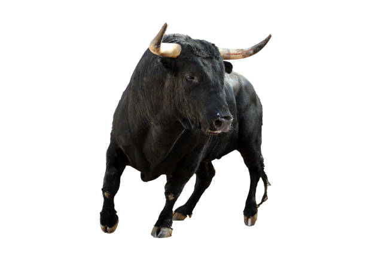

Happening anticorrida

10 boulevard des Lices 13123 Arles PACA Samedi 15 janvier 09h30 à 12h30 Description : Ce sera le premier happening anticorrida de 2022 ; à Arles en plein marché, au niveau du 10 boulevard des Lices de 9h30 à 12h30. Distribution de tracts d'information, signatures de pétitions, discussions ouvertes avec les passants sur la réalité barbare des corridas. Téléphone : 0615828027 Aller àJournée Internationale Des Droits des Animaux

PARIS Rue Rambuteau 75001 Paris Ile-de-France de 14h30 à 16h30
Description : Le dimanche 16 janvier 2022 de 14h30 à 16h30, 269 Life France organise un happening, rue Rambuteau (sous réserve d'acceptation de la préfecture), en face de l'église Saint-Eustache, dans le 1er arrondissement de Paris, sortie métro 5 : Forum - Pte Saint-Eustache dans le cadre de la journée Internationale pour les droits des animaux. - Soyez attenti-ve-f aux annonces et activer vos notifications, les détails du programme et les besoins en termes de personnes pour l’action vous seront communiqués prochainement. - L'horaire est susceptible de changer.
Cette action vise à faire reconnaître les droits fondamentaux de tous les êtres sensibles, c'est-à-dire le droit à la vie, à la liberté et à l’épanouissement naturel. L’objectif de cet événement est d’instaurer un débat public concernant l'exploitation et la mise à mort des animaux autres que les humain-e-s, et de parvenir à une reconnaissance internationale de leurs droits fondamentaux à ne pas être exploité-e-s. Rappel : Journée anniversaire de la Déclaration des droits de l’homme par les Nations Unies en 1948, le 10 décembre a été choisi pour insister sur la nécessaire évolution des droits de l’homme vers les droits de tous les animaux, humain-e-s et autres animaux. Nous avons besoin de vous, pour elles, pour eux !
*** Les CONSIGNES *** Lors de cette action, merci de ne pas porter de la fourrure (même de la fausse). Le plus important est de participer à l’action mais si possible, on évite le cuir, les similis (pour ne pas prêter à confusion) ou autre produit d’origine animale #Cohérence. Ne pas venir accompagné-e-s de nos ami-e-s animaux dits "de compagnie". MERCI à toutes et tous de respecter ces consignes afin que l’évènement se passe dans les meilleures conditions possibles et de cocher "PARTICIPE" uniquement si vous pouvez être présent-e le jour J, dans le cas contraire vous pouvez simplement marquer que vous êtes intéréssé-e (cela nous aide beaucoup pour nous organiser). Toutes les personnes s'inscrivant en participant-e-s doivent être sûr-e-s de venir pour des raisons d'organisation. Pour cet événement d'importance, nous avons besoin de militant-e-s, alors nous comptons sur vous, rejoignez-nous !
Soyons nombreu-ses, unis, solidaires et déterminé-es pour eux.
Justice pour tous les animaux !
Aller à